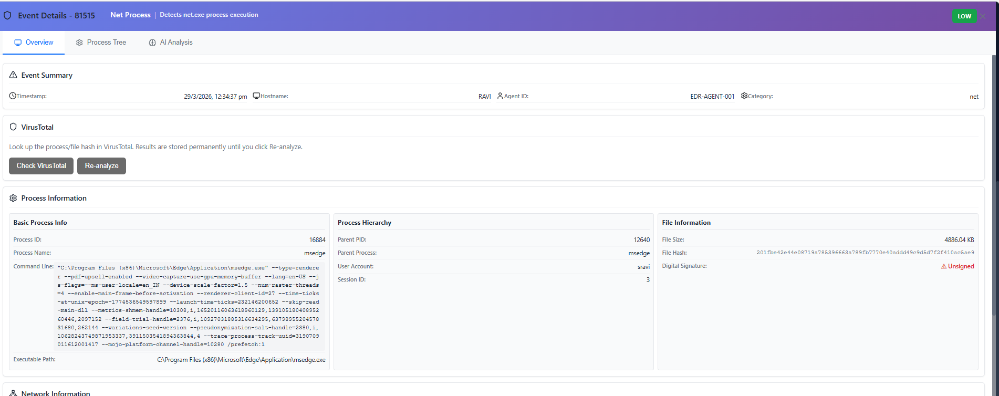
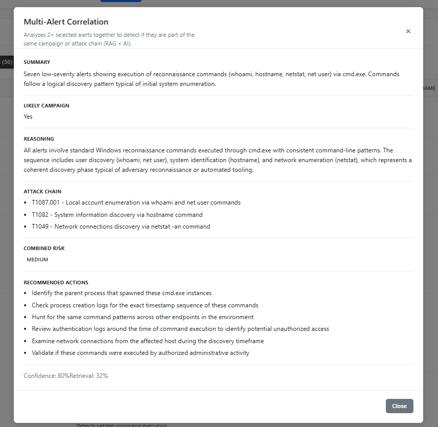
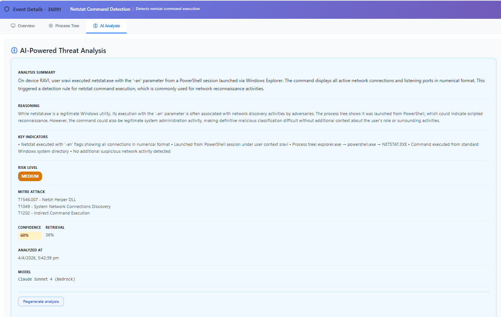
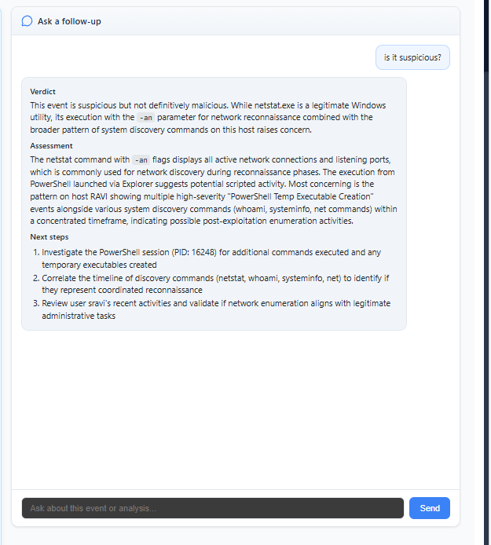

Real-time monitoring
Endpoint visibility using Sysmon telemetry for rich, structured events.
System with RAG automation
An AI-powered EDR platform that automates alert triage and incident investigation using Retrieval-Augmented Generation (RAG). It correlates endpoint telemetry and produces contextual, analyst-ready insights—cutting noise and speeding response.
Traditional EDR platforms flood the SOC with alerts that still demand manual investigation. Analysts must stitch together events, interpret telemetry, and judge severity—leading to delays, inconsistent outcomes, and fatigue.
This project closes the gap between detection and explainable, accelerated response.
Endpoint visibility using Sysmon telemetry for rich, structured events.
Configurable JSON-driven rules engine for consistent, maintainable detections.
Groups related activity into meaningful alerts instead of isolated pings.
Amazon Bedrock for contextual, evidence-linked reasoning per alert.
Automated incident narratives with severity and MITRE ATT&CK mapping.
React UI for triage, visualization, and investigation workflows.
Four integrated layers—from endpoint to analyst UI.
Collects Sysmon telemetry and applies detection rules at the edge.
AWS API Gateway, Lambda, DynamoDB, and S3 for scalable ingestion and APIs.
Amazon Bedrock powers RAG workflows for contextual security analysis.
React application for alert review, drill-down, and operator workflows.
Retrieval-Augmented Generation (RAG) grounds each analysis in your own telemetry and context—producing summaries, classification, and reasoning that analysts can trust. Less manual correlation, more consistent narratives across the team.






Automated narratives and classification reduce repetitive analyst grind.
Shared reasoning framework across alerts and shifts.
AI-driven context accelerates decisions from signal to action.